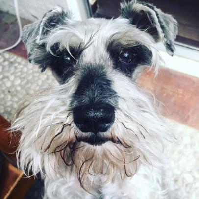

cirila

cirila fue una perrita muy bonita, leal y cariñosa. y aquí te hablaré sobre ella
biografía
Cirila nació el 31 de diciembre del 2007 junto con sus hermanas Simona y Maya. su hermana simona sería sacrificada pero antes de que sucediera, la adoptaron e igual se llevaron a cirila. vivió unos cuantos años en un departamento hasta que se mudaron a Bellavista donde conoció a su nuevo hermano humano Bruno y por ahí del 2015 conoció a su hermana perruna adoptiva Lula. todo estaba normal hasta que se mudaron a puebla donde paso muchos años felices hasta el 2021 que falleció.
las casas de cirila
Cirila ha vivido en muchas casas entre ellas: un departamento, una casa en Bellavista y una casa en Puebla.
eventos
no hay nada de momento
no hay evento actualmente